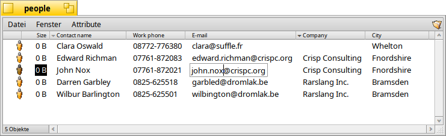

Attribute
Attribute sind Datenfelder, die zu einer Datei gehören ohne dabei ein Teil der Datei selbst zu sein. Das heißt: Attribute werden nicht zur Dateigröße dazugerechnet. Sie können kopiert oder geändert werden, ohne die Datei selbst zu ändern. Das System benutzt Attribute, um zum Beispiel Größe, Dateityp oder das Datum der letzten Änderung zu speichern. Das ist ähnlich wie bei anderen Betriebssystemen und deren Dateisystemen.
Der Unterschied liegt darin, dass jede Art von Attribut an jedwede Datei angefügt werden kann. Ein Attribut kann in einem Tracker-Fenster nicht nur dargestellt, sondern auch bearbeitet werden. Um einem Dateityp ein Attribut hinzuzufügen, muss man deren Art definieren (zum Beispiel Text, Zahl oder Zeit) und ihr einen Namen und eine Beschreibung geben.
Die Datei selbst muss dabei nicht mal einen Inhalt haben. People-Dateien sind ein Beispiel dafür:
Wie man sieht, sind People-Dateien 0 Byte große Dateien mit angehängten Attributen. Das Attribut E-Mail von "John Nox" wird gerade direkt im Tracker bearbeitet.
Werden diese Attribute indiziert, wie es mit People-, E-Mail oder Audio-Dateien von Haus aus der Fall ist, kann man sie mit Haikus schnellem Query-System durchsuchen.
 Attribute im Tracker
Attribute im Tracker
Attribute werden ähnlich wie in einer Datenbank oder Tabellenkalkulation dargestellt. Im Tracker kann ausgewählt werden, welche Attribute gezeigt werden sollen (Spalten). Die Dateiliste (Reihen) lassen sich anschließend entsprechend sortieren.
Dazu öffnet man ein Tracker-Fenster und wählt aus dem Menü die darzustellenden Attribute aus. Oder man führt einen Rechtsklick auf einen Spaltentitel aus und wählt die entsprechenden Einträge aus dem Kontextmenü. Die Spalten können durch Ziehen der Spaltentitel verschoben werden. Um Spalten, die man nicht braucht, schnell zu entfernen, zieht man sie einfach aus dem Fenster.
Ein Doppelklick auf die Trennlinie zwischen zwei Spaltentiteln stellt automatisch die optimale Breite ein.
Klickt man auf einen Spaltentitel, ändert sich die Sortierreihenfolge von auf- zu absteigend. Hält man SHIFT gedrückt, während man auf einen Spaltentitel klickt, lässt sich eine zweite Sortierung einrichten. So kann man zum Beispiel seine People-Dateien nach Firmen sortieren und innerhalb dieser Sortierung nach Kontaktnamen. Obiger Screenshot zeigt ein Beispiel dafür. Die zweite Sortierordnung ist mit einem helleren Pfeil neben dem Titel gekennzeichnet.
Attribute zu bearbeiten ist genauso einfach wie das Umbenennen einer Datei: Entweder klickt man auf einen Eintrag oder drückt ALT E und bewegt sich zwischen den Attributen mit TAB und SHIFT TAB. ESC verlässt den Bearbeitungsmodus ohne die Änderungen zu übernehmen.
Attribute im Terminal
Für alle, die die Kommandozeile bevorzugen oder vorhaben, mit vielen Dateien via Skript zu arbeiten, gibt es eine Reihe von Befehlen, um Attribute vom Terminal aus zu bearbeiten.
Mehr Informationen zu diesen Befehlen und ihren Optionen erhält man durch Eingabe des Befehls gefolgt von "-h" oder "--help".
listattr
listattr listet die Attribute einer Datei auf, zeigt aber nicht deren Inhalt. Dafür muss der Parameter -l oder --long hinzugefügt werden.
usage: listattr [-l|--long] 'filename' ['filename' ...]
Von obigem Beispiel-Screenshot:
~/people ->listattr Clara\\ Botters
File: Clara Botters
Type Size Name
----------- --------- -------------------------------
MIME String 21 "BEOS:TYPE"
Text 14 "META:name"
Text 6 "META:nickname"
Text 1 "META:company"
Text 18 "META:address"
Text 8 "META:city"
Text 1 "META:state"
Text 1 "META:zip"
Text 1 "META:country"
Text 1 "META:hphone"
Text 13 "META:wphone"
Text 1 "META:fax"
Text 19 "META:email"
Text 1 "META:url"
Text 5 "META:group"
Raw Data 20 "_trk/pinfo_le"
131 bytes total in attributes.
Neben all den "META:*" Attributen mit den Kontaktinformationen, erscheinen zwei Attribute, die vom System gepflegt werden:
BEOS:TYPE enthält den Dateityp als MIME String, hier "application/x-person". Er bestimmt das Standard-Icon und welche Anwendung die Datei bei einem Doppelklick öffnet.
"_trk/pinfo_le" ist das Attribut, in dem Tracker die Position des Icons der Datei speichert.
catattr
catattr gibt den Inhalt eines bestimmten Attributs einer Datei aus.
usage: catattr [--raw|-r] attr_name file1 [file2...]
Wieder das Beispiel:
~/people ->catattr META:city Clara\\ Botters Clara Botters : string : Whelton
addattr
addattr hängt ein Attribut an eine Datei und/oder füllt es mit einem Wert.
usage: addattr [-t type] attr value file1 [file2...]
or: addattr [-f value-from-file] [-t type] attr file1 [file2...]
Type is one of:
string, mime, int, llong, float, double, bool, icon, raw
or a numeric value (ie. 0x1234, 42, 'ABCD', ...)
The default is "string"
Wenn also die gute Clara einen Job bei der multi-nationalen Barkelbaer Inc. angetreten hat, befüllt man das vorher leere Attribut "Company" mit dieser Information (welches vom Typ "string" ist):
~/people ->addattr -t string META:company Barkelbaer\\ Inc. Clara\\ Botters
rmattr
rmattr entfernt ein Attribut komplett von einer Datei.
usage: rmattr [-p] attr filename1 [filename2...]
Obwohl es in der Praxis wohl immer genügen würde, das Attribut "Fax" einfach nicht zu füllen, kann man es so auch komplett von Claras Datei entfernen:
~/people ->rmattr META:fax Clara\\ Botters
copyattr
copyattr kopiert Attribute von einer oder mehreren Datei zu einer anderen. Standardmäßig wird dabei der eigentliche Inhalt der Datei nicht mit kopiert.
usage: copyattr <options> <source> [ ... ] <destination>
Wenn neben den Attributen auch die Daten der Datei selbst kopiert werden sollen, verwendet man die Option "-d" oder "--data".